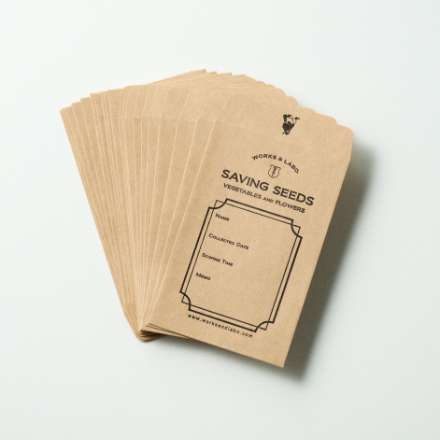

ONLINE SHOP
オンラインショップ
GARDENING GOODS
-

- ハンドフォーク
- ガーデニングの必需品といえる、伝統的な形のハンドフォークです。
-

- オニオンホー
- 地面をならしたり土を起こしたり、様々な場面で活躍するツールです。
-

- 除草ピック
- レンガのe時などの細かい雑草を除去するのに最適な女装ピックです。
-

- ガーデン捕虫器
- 木の枝やガーデンにつるして、害虫を捕獲します。 そこに果実などを入れて使います。
-

- 誘引麻ひも
- 家庭菜園に欠かせない誘引用麻ひもです。 多数のカラーをご用意しています。
-

- ラバーグローブ
- 表面がラバーコーティングされたグローブです。 作業時のすべり止めや衝撃の緩和に。
-

- 種保存袋
- 採取した種を保存しておくための袋。 使いやすいポチ袋サイズです。 20枚入り。
-

- クロス
- 吸水性に優れたマイクロファイバー製。 洗剤を使わず汚れをきれいに落とせます。